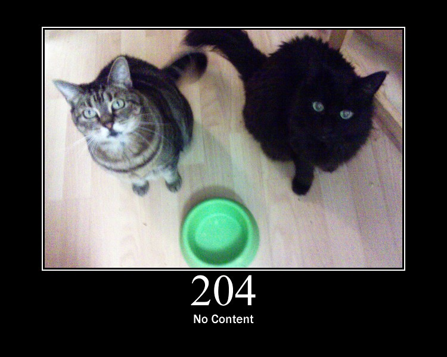

Cronograma
da disciplina
| Conteúdo | Data |
|---|---|
| Aula Inaugural | 18/02 |
| Introdução e apresentação da disciplina | 25/02 |
| Apresentação - História da computação | 11/03 |
| Apresentação - Software livre (Fernando Castor) | 18/03 |
| Monitoria - Git | 18/03 |
| Apresentação - Cidades inteligentes (Kiev Gama) | 25/03 |
| Aula - Organização dos computadores | 01/04 |
| Apresentação - Professor convidado | 08/04 |
| Projeto - LaTeX | 15/04 |
| Apresentação - Redes automotivas (Divanilson Rodrigo) | 22/04 |
| Apresentação - Visualização iterativa (Nivan Roberto) | 29/04 |
| Apresentação - Professor convidado | 06/05 |
| Apresentação - Inteligência artificial (Cleber Zanchettin) | 13/05 |
| Monitoria - Acompanhamento do projeto | 20/05 |
| Projeto - Inteligência artificial | 27/05 |
| Monitoria - Acompanhamento do projeto | 03/06 |
| Monitoria - Acompanhamento do projeto | 10/06 |
| Apresentação do projeto IA | 17/06 |
| Prova Final | 01/07 |
Projetos
- Cartões - História da computação
- Prazo de entrega: 10/04
- Lista de temas
- Modelo de carta
- Local de entrega
- LaTeX
- Sem informações.
- Inteligência Artificial
- Sem informações.
Material
auxiliar
-

Salva-vidas Git
18 de março de 2019Material de Git feito para a turma de 2019.1.
(Use seu login do CIn para ter acesso ao material) -

Slide da monitoria
18 de março de 2019Slide usado na monitoria de Git feito para a turma de 2019.1.
(Use seu login do CIn para ter acesso ao material)
-

Material Indisponível
7 de Abril de 2019Ainda sem material auxiliar para este projeto, assim que houver, será disponibilizado nesta seção.
-

Material Indisponível
7 de Abril de 2019Ainda sem material auxiliar para este projeto, assim que houver, será disponibilizado nesta seção.
Professor
da Disciplina
- Cléber Zanchettin (cz@cin.ufpe.br)
Contato
dos monitores
- Marconi Gomes (mgrf@cin.ufpe.br)
- Lucas Rodrigues (lrsv@cin.ufpe.br)
- Saulo Barros (sab2@cin.ufpe.br)
- Erick Almeida (eaor@cin.ufpe.br)
- Lucas Vinicius (lvjs@cin.ufpe.br)
- Matheus Felipe (mfs5@cin.ufpe.br)